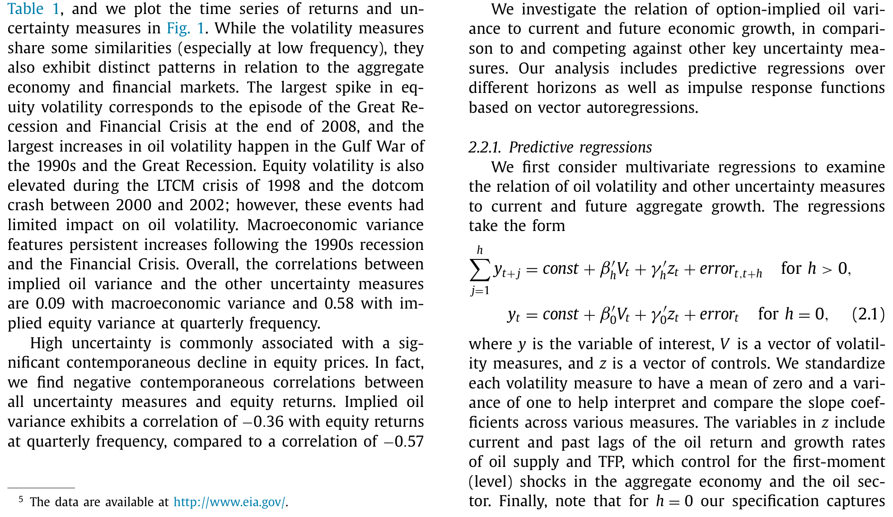
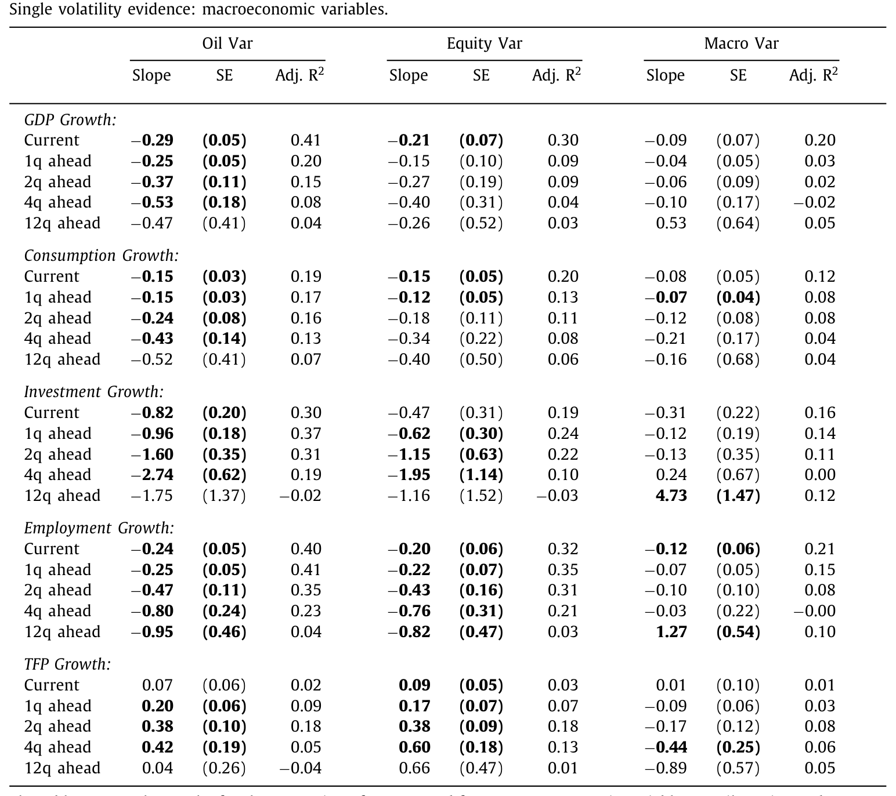
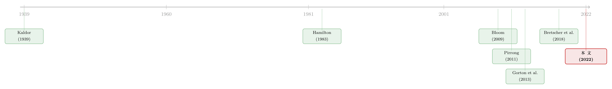

油价的「波动」，比油价本身更早预言衰退
本文读的是 Gao, Hitzemann, Shaliastovich & Xu (2022, Journal of Financial Economics)：从原油期权里抽出来的「油价波动率」，是预测未来产出、消费、投资、就业下滑的一个极强信号——它的预测力常常压过股市波动率、TFP 波动率和政策不确定性。更妙的是，作者找到了传导这条信号的物理管道：油价越「测不准」，企业越要囤油备荒，囤起来的油就用不进生产，于是经济活动被悄悄抽走了一块。
1 一个反直觉的开场
先问一个看似简单的问题：要预测美国经济下个季度会不会变差，你会盯着什么？
大多数人的第一反应是股市——VIX 一跳，所有人都开始紧张。学术界也确实积累了一大堆「不确定性指标」：股票市场的隐含方差、TFP 的条件波动、Baker、Bloom 和 Davis 的政策不确定性指数……这些指标都被反复证明：不确定性一上升，未来的增长就往下走（关于「不确定性」如何被定价、又如何反过来压低通胀，可参见《利率触到地板那天，不确定性开始压低通胀》）。
但本文这四位作者偏要往一个更窄、更「土」的角落里看：原油价格的波动率。注意，不是油价本身涨了还是跌了，而是油价「测不准」的程度。
这听上去像是在一片已经被踏平的草地上又踩一脚。石油冲击影响宏观，这是 Hamilton (1983) 以来教科书级的常识；油价不确定性会拖累投资，Bernanke (1983) 的「不可逆投资」理论也早有预言。那这篇还能讲出什么新东西？
答案是两件事，而且都很硬。第一，油价波动率不是众多不确定性里平平无奇的一个，它是最强的那一个——在一场多变量「赛马」里，它常常把股市波动率和宏观波动率直接挤出方程。第二，也是真正关键的一步：作者没有停在「相关性」上，而是把这条信号背后的物理传导管道给挖了出来——油价越不确定，企业越要囤油，囤油就挤掉了生产用油。这是一个能被库存数据、被原油期货基差、被股票截面同时验证的故事。
我们顺着这条线走。
2 第一个事实：油波动率「跑赢」了所有人
作者的核心解释变量，是用原油期权价格、按 VIX 同样的无模型方法算出来的 30 天前瞻隐含方差（option-implied oil variance）。样本是季度数据，从 1990Q1 到 2019Q4，起点由期权数据的可得性决定。
先看最粗的相关系数。原油方差和当期实际 GDP 增速的季度相关是 −0.57，而股市方差、宏观方差与 GDP 增速的相关分别只有 −0.41 和 −0.21。换句话说，油波动率和经济的负相关，比股市波动率还要深一截。投资增速、就业增速上是同样的格局；到了年度频率，油方差与 GDP 增速的相关进一步压到 −0.64。
有意思的是另外两行：油方差与油库存增长的相关是正的（季度 0.08、年度 0.24），与油消费增长的相关是负的（年度高达 −0.79）。先把这两个数字记在心里——它们后面会变成整篇文章的「题眼」。

Table 1: , and we plot the time series of returns and un- We investigate the relation of option-implied oil vari-
光看相关还不够。接着，一个自然的问题是：把这些波动率放进同一个预测回归里，谁还站得住？作者跑的是如下形式的多元预测回归：
$$ y_t = \text{const} + \beta_0' V_t + \gamma_0' z_t + \text{error}_t, \quad h=0 $$
其中 \(y\) 是关心的宏观变量，\(V\) 是波动率向量（油、股、宏观方差），\(z\) 是一组控制——当期与滞后的油价收益、油供给增速、TFP 增速，用来吸收掉「一阶」的水平冲击，让 \(V\) 只承载「二阶」的不确定性信息。每个波动率都被标准化成均值 0、方差 1，于是系数可以直接横向比较。对未来 \(h\) 期的累计增长，回归写成：
结果（先逐个波动率单独看）写在表 2 里。读一眼 GDP 那一栏：油方差当期系数 −0.29（标准误 0.05，调整 \(R^2=0.41\)），一年后 −0.53（标准误 0.18）；而股市方差当期只有 −0.21、宏观方差只有 −0.09 且不显著。投资上的差距更夸张——油方差一个季度后的系数是 −0.96，两个季度 −1.60，四个季度 −2.74。无论是经济意义还是统计显著性，油方差几乎在每一个变量、每一个时间窗上都比股市方差和宏观方差更强，而且这种负向预测一路显著到四个季度，就业上甚至超过一年。

Table 2
这里有一个容易被忽略的对照组：TFP（全要素生产率）。如果油波动率是通过「打击技术/生产率」来拖累经济的，那它应该能预测未来 TFP 下滑。但数据说不是——油方差对未来 TFP 的预测系数是正的、且大多不显著。这一脚把「生产率渠道」直接踢出了局，也逼出了下一节那个真正的机制。
把多个波动率塞进同一个回归做「赛马」、再用向量自回归（vector autoregression, VAR）估脉冲响应，结论一致：油方差「活」了下来，并在多数设定里把其它不确定性变量挤掉。最保守的一档脉冲响应给出的量级是——一个标准差的油方差冲击，一年后让产出降 0.24%、消费降 0.16%、投资降 0.88%、就业降 0.11%。
3 真正关键的一步：油去哪儿了？
到这里，故事其实还停在「油波动率是个好的领先指标」。但一个挑剔的读者会追问：凭什么？ 机制是什么？
作者去翻油部门自己的基本面，找到了那条管道。一个标准差的油方差上升，预测油库存上升 0.2%–0.4%，同时油消费下降一个相近的幅度；油产量也有所下降（虽然证据更弱），与「不确定性高时延迟钻探、延迟开采」的直觉一致。
于是反转出现了：经济变差，不是因为油「涨价」了，也不是因为生产率被打击了，而是因为油被囤起来、没进生产线。这正好接上了第 2 节末尾那个看似不起眼的正相关——油方差↑ ⇒ 库存↑。
为什么企业要在不确定性高的时候囤油？这其实是一条很老的逻辑，叫储存理论（theory of storage）：面对可能的大额供给/需求冲击，理性的企业会把存货当作「缓冲垫」（cushion）。Kaldor (1939)、Working (1949) 早有此论，Pirrong (2011) 则给出了一个动态模型，明确指出预防性库存会随不确定性上升而增加。本文的贡献是把这条逻辑的宏观后果讲透：当所有人都去囤油，能用于生产最终品的油就少了，产出、消费、投资、就业于是同时被压低。
这里还埋着一个对一般均衡模型的「彩蛋」。很多不确定性模型有个老毛病：不确定性一冲击，消费和投资应该一个涨一个跌（因为产出短期固定，省下的消费才能去投资），可数据里两者明明是一起跌的。本文的预防性库存渠道天然解决了这个矛盾——囤油立刻压低了当期可用产出，于是消费和投资能够同步下滑，不需要价格刚性或小型开放经济的资本外逃来救场。
为了从财务市场再确认一次，作者还看了原油期货基差（oil futures basis，现货与期货价之差）。基差是商品市场里公认的库存「温度计」（Gorton et al., 2013）。结果：基差对油方差在一年以上的期限上有显著负暴露，且期限越长越强；而基差对股市方差、宏观方差的暴露不显著、甚至是正的。一句话——只有油自己的波动率，才真正撬动了油的库存。
4 一个把直觉写成方程的模型
光有实证还不够，作者搭了一个宏观-金融两部门生产经济模型，把上面的直觉做成可计算、可校准的机制。模型的骨架是这样几步：
第一步，两个部门、两种不确定性。 经济分为「油部门」和「一般宏观部门」，两边都带有随机的供给不确定性。在油部门，油从既有油井中开采，总开采率受外生波动冲击；在宏观部门，油是最终品生产不可或缺的投入要素。
第二步，库存是企业的选择变量。 企业理性地管理油库存，每一刻决定囤多少油。囤起来的那部分油，决定了真正能投入生产的油有多少。这是模型的枢纽：库存把「油的总量」和「生产可用的油」劈成了两半。
第三步，预防性储蓄效应。 当油相关不确定性升高，企业为了给「可能很大的负向油供给冲击」留缓冲，会主动加大库存。直接后果是用于生产的油减少，于是产出、消费、投资、就业被一并压低。这正是实证里看到的那条管道。
第四步，资产价格的横截面。 模型进一步把不同行业对油的依赖，连到油与其它投入品之间的替代弹性（elasticity of substitution）上。替代弹性越低，对油作为投入的敏感度越高，该行业股票对油波动率的负暴露就越大。这解释了一个漂亮的截面规律：对油价风险负暴露的行业，往往对油方差也是负暴露；而油行业自己处在光谱的另一端——它对油价和油方差的暴露最不为负、甚至为正，因为高波动抬高了它手里油库存的价值。
模型用的是 Epstein-Zin (1991) 递归偏好，这让「波动率风险」本身能够被定价（投资者厌恶不确定性的上升），从而在总量上产生高油波动率 ⇒ 负的总股票收益，同时油部门估值可以逆势走高。这与数据里「总市场对油波动率负暴露、油行业正暴露」严丝合缝。
第五步，定量对账。 作者把现有文献的两点洞见（油冲击会被时变加成率和中间部门联系放大、油波动率与油产量负相关）纳入一个「完整放大版」模型后，油波动率冲击带来的下跌是：产出 0.30%、消费 0.22%、投资 0.65%、就业 0.23%——与实证脉冲响应的量级高度吻合。在模型的模拟数据里，油价方差作为经济增长的负向指标，同样压过了股市方差和 TFP 方差，和真实数据如出一辙。
一个诚实的提醒：本文提供的正文片段没有完整列出模型的生产函数、库存动态与值函数的解析形式，因此上面的「带标注公式块」我放在了实证设定（式 2.1）这一确凿可复现的方程上，而模型部分只按文字逐步还原其机制与定量结论，不去杜撰原文未给出的方程。读者若要复算，请以原文第 3–4 节的设定为准。
5 文献脉络
把这篇放回它生长的土壤里，能看到三条河流在此交汇。
第一条，是「石油与宏观经济」。 从 Hamilton (1983) 把石油冲击钉进战后衰退，到 Barsky & Kilian (2004)、Hamilton (2008)、Kilian (2008) 不断细化油价冲击的来源与影响；在资产定价侧，则有 Chen et al. (1986)、Jones & Kaul (1996)、Driesprong et al. (2008)、Ready (2018) 研究油与股市的关系。但这条河里绝大多数论文盯的是油价的「水平」变化，对「波动率」着墨不多。
第二条，是「不确定性冲击」。 Bloom (2009) 让「不确定性冲击」成为商业周期的一个独立驱动；Bansal & Yaron (2004)、Bansal et al. (2014)、Basu & Bundick (2017)、Bloom et al. (2018) 则把波动率风险接进资产定价与一般均衡。沿着「不可逆投资」的支线，Bernanke (1983)、Pindyck (1991) 早就预言油不确定性会延迟投资，Ferderer (1996)、Elder & Serletis (2010)、Jo (2014) 给出实证。近年还冒出一支「市场隐含不确定性是强预测指标」的新流派——Bretscher et al. (2018)、Cremers et al. (2021) 用国债期权的利率波动率预测宏观，本文与它们精神相通。
第三条，是最古老的「储存理论」。 Kaldor (1939)、Working (1949) 奠基，Deaton & Laroque (1992)、Routledge et al. (2000)、Gorton et al. (2013) 现代化，Pirrong (2011) 给出预防性库存随不确定性上升的动态模型。本文真正的「焊点」，就在这里——它第一个把「不确定性驱动的库存」与「宏观增长、股票收益」连了起来，填上了这条文献此前一直沉默的那一块。

放在生产经济一般均衡资产定价（Cochrane 1991；Jermann 1998）这条更大的传统里，本文承接的是近年专注「油部门 × 宏观」互动的工作（Hitzemann, 2016；Casassus et al., 2018；Ready, 2018），但它是第一个把油不确定性的波动、它经由库存的传导、以及它对增长与资产价格的含义一并装进同一个宏观-金融模型的尝试。
6 评论与延伸（Q&A + 研究方向）
(a) 几个可能的疑问
Q：油波动率和油价水平，会不会其实是一回事？高波动时油价也在剧烈变，怎么确定是「波动率」在起作用？
这正是作者特意防的。回归里 \(z\) 向量已经放进了当期与滞后的油价收益作为一阶控制，把「涨跌」吸走；而且数据显示油方差与油价收益的相关并不稳定——海湾战争时油价是猛涨，金融危机时油价是暴跌，但两次油波动率都飙升。所以驱动结果的是「测不准」本身，不是某个方向的价格变动。
Q：会不会只是金融危机这一个极端样本在「带节奏」？
作者明确报告：剔除金融危机后，预测显著性不仅没塌，部分变量（如就业）的显著期甚至延长到 12 个季度；相关系数的格局在去掉危机后也稳健。这恰恰因为油波动率最大的两次跳升，一次在 1990 年代海湾战争、一次在大衰退，并非由单一危机贡献。
Q：油方差「挤掉」股市方差和宏观方差，是不是因为后两者测得太差？
不太像。股市方差用的是 VIX 平方这种无模型、市场隐含的高质量度量，本身在短期对就业、产出也显著（与 Bloom 2009 一致）。油方差的胜出更可能是因为它额外承载了一条别人没有的信息——油库存这条实物渠道，而非别人测得差。
Q：TFP 那个「正号」会不会很尴尬？不是说不确定性会压低生产率吗？
它对本文反而是好消息。David et al. (2016)、Bloom et al. (2018) 确实提出过「不确定性→TFP 下降」的渠道，但如果本文的油波动率走的是这条路，就该看到负的 TFP 预测。结果是正且不显著，等于排除了生产率渠道，把解释权完整地交给了「预防性库存」这条实物管道。
Q：消费和投资「一起跌」，凭什么说这是本文模型的优势？
因为这是一般均衡模型的老大难。无摩擦的 RBC 里，产出短期给定，消费跌则投资必涨，反之亦然，得不到二者同跌。文献通常要靠价格/工资刚性或资本外逃来补。本文的库存渠道让不确定性立刻减少当期可用产出，于是消费、投资可以同步下滑，机制上更干净。
Q：这对「油—信用/债券」市场有什么含义？
直接含义是：油波动率是一个领先于实体下行的信号，而实体下行通常伴随信用利差走阔。油密集型行业（替代弹性低）对油方差暴露最负，它们的现金流与违约风险大概率也对油方差最敏感——这正好是下面研究方向里值得做的一块。
(b) 几个可能的研究问题与提案
1. 油波动率与公司债信用利差的横截面
【经济故事】本文证明油波动率压低增长、且不同行业的股票暴露随替代弹性而异。一个自然的延伸：油密集、低替代弹性行业的信用利差，是否对油方差有更强的正暴露？若是，油波动率就是一个被忽视的、行业层面的信用风险因子。 【可行性】高。数据齐全（TRACE 公司债成交、Compustat 行业分类、CME 原油期权算油方差），识别用行业 × 时间面板回归 + 公司固定效应即可。难点是把「油暴露」干净地度量出来，但本文已给出投入-产出口径的现成思路。
2. 外资持有人与油冲击的跨境传导
【经济故事】油是全球市场，但本文只看美国。一个问题是：当油波动率飙升、油密集行业债券走弱时，外资持有人是先撤退还是逆势接盘？外资占比高的行业，其债券流动性对油方差冲击是否更脆弱？ 【可行性】中。需要 TIC 或 eMAXX/Mergent 的债券持有人国别数据，叠加油方差冲击做事件研究。识别上的挑战是把「外资行为」与「基本面恶化」分开，可用油方差的外生跳升（如地缘事件）作工具。
3. 油波动率冲击下的债券市场流动性
【经济故事】本文的库存渠道说「不确定性→囤积实物缓冲」。金融市场里有没有平行现象——油方差飙升时，做市商对油密集行业债券的「囤货意愿」下降、买卖价差走阔？这等于把「预防性储存」从实物搬到金融中介的资产负债表上。 【可行性】中高。用 TRACE 算 size-adapted 流动性度量（参见《把「成交价」从「成交量」里解放出来》），对油方差冲击做面板回归，按行业油暴露分组。数据 doable，关键是控制住同期股市波动率这个混淆项。
4. 用期权曲面分解「油不确定性」的好坏
【经济故事】本文把油波动率当成单一标量。但隐含波动率曲面里，左尾（崩盘）和右尾（飙涨）的不确定性经济含义并不一样——海湾战争是右尾、大衰退是左尾。把油方差拆成「好/坏」两半，哪一半才是增长的真正杀手？ 【可行性】高。原油期权数据足以构造下半/上半方差（à la realized semivariance 的隐含版本），重跑本文回归即可。识别是纯时序的，干净。
5. 库存渠道的微观验证：企业层面的囤油行为
【经济故事】本文的库存数据是 OECD 加总的。如果能拿到企业或炼厂层面的库存，就能直接检验「油方差↑ ⇒ 该企业囤油↑ ⇒ 该企业产出↓」的因果链，而不只是宏观相关。 【可行性】低-中。企业级油库存数据极难获取（EIA 有部分炼厂/地区库存），识别要靠企业对油的暴露异质性。数据是主要瓶颈，但一旦拿到，说服力会大幅提升。
7 我的判断
贡献。 这篇论文最漂亮的地方，不在于又找到一个能预测衰退的变量——这种「不确定性动物园」已经够拥挤了。它的真正价值，是给一个市场隐含的指标配上了一条可被多重数据交叉验证的实物机制：油波动率→预防性库存→挤出生产用油→增长下行。库存、期货基差、行业股票截面、再到一个能定量对账的两部门模型，四条独立证据指向同一个故事。这种「机制可证伪」的研究，远比单纯的预测性回归扎实。它顺带还解决了一般均衡里「消费投资同跌」的老难题，这是个不小的副产品。
对识别的担忧。 我有两点保留。其一，样本只有 1990Q1–2019Q4、季度频率，约 120 个观测，却要在多变量赛马里区分油、股、宏观三种波动率的边际贡献——自由度是紧的，VAR 的脉冲响应对设定（变量顺序、滞后阶数）可能敏感，最保守那一档已经把投资效应从更大压到 0.88%，说明区间不窄。其二，库存与消费数据是 OECD 加总的实物量，频率低、修订多，「油方差→库存」这条关键链路目前是预测性相关，离干净的因果还有距离——真正的外生性，得靠地缘政治这类油供给冲击来撬。
后续想看的。 我最想看到的，是把这条机制搬进信用市场：如果油波动率真的通过库存挤出了生产、压低了油密集行业的现金流，那它应该在这些行业的债券利差和违约率上留下指纹。再往前一步，是企业级的库存证据——把宏观加总的「囤油」落到一个个炼厂的资产负债表上，这条因果链才算焊死。在那之前，本文已经把一个被忽视的角落，照得相当亮了。
参考文献
- Barsky, R. B., & Kilian, L. (2004). Oil and the macroeconomy since the 1970s. Journal of Economic Perspectives 18(4), 115–134.
- Basu, S., & Bundick, B. (2017). Uncertainty shocks in a model of effective demand. Econometrica 85(3), 937–958.
- Bansal, R., & Yaron, A. (2004). Risks for the long run: a potential resolution of asset pricing puzzles. Journal of Finance 59(4), 1481–1509.
- Bansal, R., Kiku, D., Shaliastovich, I., & Yaron, A. (2014). Volatility, the macroeconomy, and asset prices. Journal of Finance 69(6), 2471–2511.
- Bernanke, B. (1983). Irreversibility, uncertainty, and cyclical investment. Quarterly Journal of Economics 98(1), 85–106.
- Bloom, N. (2009). The impact of uncertainty shocks. Econometrica 77(3), 623–685.
- Bretscher, L., Schmid, L., & Vedolin, A. (2018). Interest rate risk management in uncertain times. Review of Financial Studies 31(8), 3019–3060.
- Casassus, J., Collin-Dufresne, P., & Routledge, B. R. (2018). Equilibrium commodity prices with irreversible investment and non-linear technologies. Journal of Banking & Finance 95, 128–147.
- Cremers, M., Fleckenstein, M., & Gandhi, P. (2021). Treasury yield implied volatility and real activity. Journal of Financial Economics.
- Deaton, A., & Laroque, G. (1992). On the behaviour of commodity prices. Review of Economic Studies 59(1), 1–23.
- Elder, J., & Serletis, A. (2010). Oil price uncertainty. Journal of Money, Credit and Banking 42(6), 1137–1159.
- Epstein, L. G., & Zin, S. E. (1991). Substitution, risk aversion, and the temporal behavior of consumption and asset returns: an empirical analysis. Journal of Political Economy 99(2), 263–286.
- Ferderer, J. P. (1996). Oil price volatility and the macroeconomy. Journal of Macroeconomics 18(1), 1–26.
- Gao, L., Hitzemann, S., Shaliastovich, I., & Xu, L. (2022). Oil volatility risk. Journal of Financial Economics 144(2), 456–491.
- Gorton, G. B., Hayashi, F., & Rouwenhorst, K. G. (2013). The fundamentals of commodity futures returns. Review of Finance 17(1), 35–105.
- Hamilton, J. D. (1983). Oil and the macroeconomy since World War II. Journal of Political Economy 91(2), 228–248.
- Hitzemann, S. (2016). Macroeconomic fluctuations, oil supply shocks, and equilibrium oil futures prices. Working paper, The Ohio State University.
- Jo, S. (2014). The effects of oil price uncertainty on global real economic activity. Journal of Money, Credit and Banking 46(6), 1113–1135.
- Kaldor, N. (1939). Speculation and economic stability. Review of Economic Studies 7(1), 1–27.
- Pirrong, C. (2011). Commodity Price Dynamics: A Structural Approach. Cambridge University Press.
- Ready, R. C. (2018). Oil prices and the stock market. Review of Finance 22(1), 155–176.
- Routledge, B. R., Seppi, D. J., & Spatt, C. S. (2000). Equilibrium forward curves for commodities. Journal of Finance 55(3), 1297–1338.
- Working, H. (1949). The theory of price of storage. American Economic Review 39(6), 1254–1262.